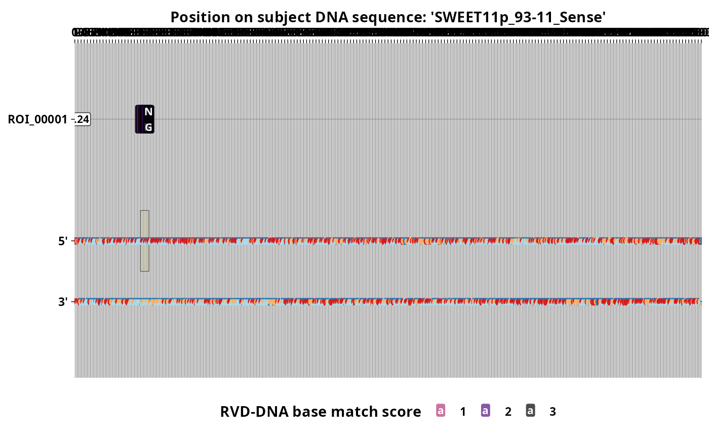

Plot TALE RVD sequences along a potential DNA target region
Source:R/target_predictions.R
plot_target_preds.RdThis function enable visual inspection of TALE target predictions results that are located within a specified subject DNA sequence region
Arguments
- preds
A tibble of prediction results obtained with
preditaleortalvezor a custom table in this format.- subj_file
The fasta file of subject DNA sequences that was used to predict DNA binding elements.
- filter_range
A length one genomic ranges in the form of a properly formatted character string (eg. "chr2:56-125") or an atomic GenomicRanges object. This argument specify the DNA region that will be plotted together with predicted binding TALEs RVD sequences whose predicted EBE lies entirely whithin.
Details
RVDs sequences predicted to target an EBE on the sense strand of the DNA sequence are plotted on top of the double stranded DNA sequence in parallel to its cognate EBE which is highlighted on the corresponding strand of the DNA sequence. Those preicted to target an EBE on the opposite strand are displayed below.
Individual RVDs are printed inside colored boxes. The color of the boxes indicate to which degree the RVD is predicted to have affinity with the corresponding nucleotide on the DNA sequence at that position relatively to other nucleotides. The RVDs labelled "OO" correspond to the first non-canonical repeat also called repeat zero in TALE protein squences.
Numeric values inside the boxes located immediately to the right of the TALE labels reflect prediction scores.
See also
Other target prediction:
preditale(),
tales_predict_targets(),
talvez()
Other TALE plots:
plot.tales(),
plot.tales_msa(),
talomes_heatmap()
Examples
# \donttest{
# Needs a Java runtime, for preditale().
x <- tales_from_telltale(system.file("extdata", "tellTaleExampleOutput",
package = "tantale"))
rvds <- tales_rvd_strings(x)
subj <- system.file("extdata", "cladeIII_sweet_promoters.fasta",
package = "tantale")
preds <- preditale(rvd_seqs = rvds, subj_file = subj)
best <- preds[order(-preds$score), ][1, ]
plot_target_preds(preds = best, subj_file = subj,
filter_range = paste0(best$subjSeqId, ":1-2000"))
#> Warning: Using `size` aesthetic for lines was deprecated in ggplot2 3.4.0.
#> ℹ Please use `linewidth` instead.
#> ℹ The deprecated feature was likely used in the tantale package.
#> Please report the issue at <https://github.com/scunnac/tantale/issues>.

# }